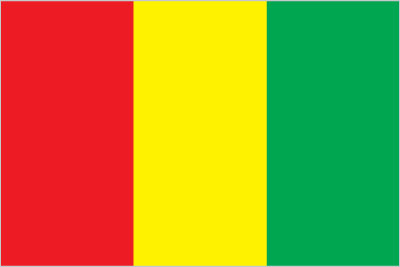
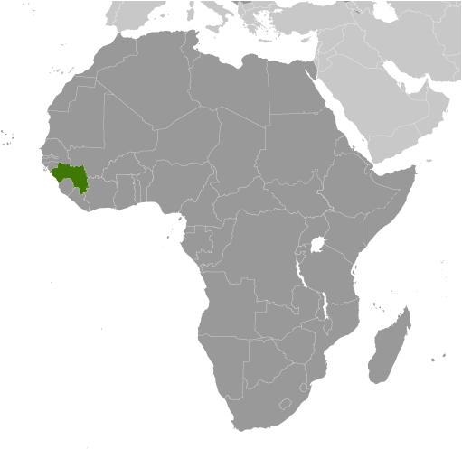
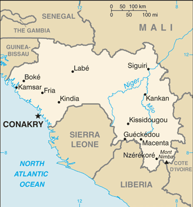

Africa :: GUINEA
Introduction :: GUINEA
-
Guinea is at a turning point after decades of authoritarian rule since gaining its independence from France in 1958. Guinea held its first free and competitive democratic presidential and legislative elections in 2010 and 2013 respectively, and in October 2015 held a second consecutive presidential election. Alpha CONDE was reelected to a second five-year term as president in 2015, and the National Assembly was seated in January 2014. CONDE's first cabinet is the first all-civilian government in Guinea. The country held a successful political dialogue in August and September 2016 that brought together the government and opposition to address long-standing tensions. Likewise, President CONDE’s election as AU chairperson has instilled confidence in Guinea. Previously, Sekou TOURE ruled the country as president from independence to his death in 1984. Lansana CONTE came to power in 1984 when the military seized the government after TOURE's death. Gen. CONTE organized and won presidential elections in 1993, 1998, and 2003, though all the polls were rigged. Upon CONTE's death in December 2008, Capt. Moussa Dadis CAMARA led a military coup, seizing power and suspending the constitution. His unwillingness to yield to domestic and international pressure to step down led to heightened political tensions that culminated in September 2009 when presidential guards opened fire on an opposition rally killing more than 150 people, and in early December 2009 when CAMARA was wounded in an assassination attempt and exiled to Burkina Faso. A transitional government led by Gen. Sekouba KONATE paved the way for Guinea's transition to a fledgling democracy.
Geography :: GUINEA
-
Western Africa, bordering the North Atlantic Ocean, between Guinea-Bissau and Sierra Leone11 00 N, 10 00 WAfricatotal: 245,857 sq kmland: 245,717 sq kmwater: 140 sq kmcountry comparison to the world: 80slightly smaller than Oregontotal: 4,046 kmborder countries (6): Cote d'Ivoire 816 km, Guinea-Bissau 421 km, Liberia 590 km, Mali 1,062 km, Senegal 363 km, Sierra Leone 794 km320 kmterritorial sea: 12 nmexclusive economic zone: 200 nmgenerally hot and humid; monsoonal-type rainy season (June to November) with southwesterly winds; dry season (December to May) with northeasterly harmattan windsgenerally flat coastal plain, hilly to mountainous interiormean elevation: 472 melevation extremes: lowest point: Atlantic Ocean 0 mhighest point: Mont Nimba 1,752 mbauxite, iron ore, diamonds, gold, uranium, hydropower, fish, saltagricultural land: 58.1%arable land 11.8%; permanent crops 2.8%; permanent pasture 43.5%forest: 26.5%other: 15.4% (2011 est.)950 sq km (2012)areas of highest density are in the west and south; interior is sparsely populatedhot, dry, dusty harmattan haze may reduce visibility during dry seasondeforestation; inadequate potable water; desertification; soil contamination and erosion; overfishing, overpopulation in forest region; poor mining practices have led to environmental damageparty to: Biodiversity, Climate Change, Climate Change-Kyoto Protocol, Desertification, Endangered Species, Hazardous Wastes, Law of the Sea, Ozone Layer Protection, Ship Pollution, Wetlands, Whalingsigned, but not ratified: none of the selected agreementsthe Niger and its important tributary the Milo River have their sources in the Guinean highlands
People and Society :: GUINEA
-
12,413,867 (July 2017 est.)country comparison to the world: 74noun: Guinean(s)adjective: GuineanFulani (Peul) 32.1%, Malinke 29.8%, Susu 19.8%, Guerze 6.2%, Kissi 4.7%, Toma 2.8%, other/no answer 4.6% (2012 est.)French (official)note: each ethnic group has its own languageMuslim 86.7%, Christian 8.9%, animist/other/none 4.4% (2012 est.)Guinea’s strong population growth is a result of declining mortality rates and sustained elevated fertility. The population growth rate was somewhat tempered in the 2000s because of a period of net outmigration. Although life expectancy and mortality rates have improved over the last two decades, the nearly universal practice of female genital cutting continues to contribute to high infant and maternal mortality rates. Guinea’s total fertility remains high at about 5 children per woman because of the ongoing preference for larger families, low contraceptive usage and availability, a lack of educational attainment and empowerment among women, and poverty. A lack of literacy and vocational training programs limit job prospects for youths, but even those with university degrees often have no option but to work in the informal sector. About 60% of the country’s large youth population is unemployed.Tensions and refugees have spilled over Guinea’s borders with Sierra Leone, Liberia, and Cote d’Ivoire. During the 1990s Guinea harbored as many as half a million refugees from Sierra Leone and Liberia, more refugees than any other African country for much of that decade. About half sought refuge in the volatile “Parrot’s Beak” region of southwest Guinea, a wedge of land jutting into Sierra Leone near the Liberian border. Many were relocated within Guinea in the early 2000s because the area suffered repeated cross-border attacks from various government and rebel forces, as well as anti-refugee violence.0-14 years: 41.52% (male 2,603,506/female 2,550,714)15-24 years: 19.73% (male 1,236,092/female 1,212,936)25-54 years: 30.59% (male 1,905,249/female 1,892,638)55-64 years: 4.48% (male 266,848/female 289,697)65 years and over: 3.67% (male 201,598/female 254,589) (2017 est.)total dependency ratio: 84.2youth dependency ratio: 78.6elderly dependency ratio: 5.6potential support ratio: 17.8 (2015 est.)total: 18.9 yearsmale: 18.7 yearsfemale: 19.1 years (2017 est.)country comparison to the world: 2042.61% (2017 est.)country comparison to the world: 1735.1 births/1,000 population (2017 est.)country comparison to the world: 209 deaths/1,000 population (2017 est.)country comparison to the world: 660 migrant(s)/1,000 population (2017 est.)country comparison to the world: 82areas of highest density are in the west and south; interior is sparsely populatedurban population: 38.2% of total population (2017)rate of urbanization: 3.73% annual rate of change (2015-20 est.)CONAKRY (capital) 1.936 million (2015)at birth: 1.03 male(s)/female0-14 years: 1.02 male(s)/female15-24 years: 1.02 male(s)/female25-54 years: 1.01 male(s)/female55-64 years: 0.92 male(s)/female65 years and over: 0.79 male(s)/femaletotal population: 1 male(s)/female (2016 est.)18.9 yearsnote: median age at first birth among women 25-29 (2012 est.)679 deaths/100,000 live births (2015 est.)country comparison to the world: 11total: 50 deaths/1,000 live birthsmale: 52.6 deaths/1,000 live birthsfemale: 47.3 deaths/1,000 live births (2017 est.)country comparison to the world: 29total population: 61 yearsmale: 59.5 yearsfemale: 62.6 years (2017 est.)country comparison to the world: 2014.77 children born/woman (2017 est.)country comparison to the world: 195.6% (2012)5.6% of GDP (2014)country comparison to the world: 1180.3 beds/1,000 population (2011)improved:urban: 92.7% of populationrural: 67.4% of populationtotal: 76.8% of populationunimproved:urban: 7.3% of populationrural: 32.6% of populationtotal: 23.2% of population (2015 est.)improved:urban: 34.1% of populationrural: 11.8% of populationtotal: 20.1% of populationunimproved:urban: 65.9% of populationrural: 88.2% of populationtotal: 79.9% of population (2015 est.)1.5% (2016 est.)country comparison to the world: 34120,000 (2016 est.)country comparison to the world: 365,800 (2016 est.)country comparison to the world: 28degree of risk: very highfood or waterborne diseases: bacterial and protozoal diarrhea, hepatitis A, and typhoid fevervectorborne diseases: malaria, dengue fever, and yellow feverwater contact disease: schistosomiasisaerosolized dust or soil contact disease: Lassa feveranimal contact disease: rabies (2016)7.7% (2016)country comparison to the world: 15818.7% (2012)country comparison to the world: 333.2% of GDP (2014)country comparison to the world: 156definition: age 15 and over can read and writetotal population: 30.4%male: 38.1%female: 22.8% (2015 est.)total: 9 yearsmale: 10 yearsfemale: 8 years (2014)total: 1%male: 1.5%female: 0.6% (2012 est.)
Government :: GUINEA
-
conventional long form: Republic of Guineaconventional short form: Guinealocal long form: Republique de Guineelocal short form: Guineeformer: French Guineaetymology: the country is named after the Guinea region of West Africa that lies along the Gulf of Guinea and stretches north to the Sahelpresidential republicname: Conakrygeographic coordinates: 9 30 N, 13 42 Wtime difference: UTC 0 (5 hours ahead of Washington, DC, during Standard Time)7 regions administrative and 1 gouvenorat*; Boke, Conakry*, Faranah, Kankan, Kindia, Labe, Mamou, N'Zerekore2 October 1958 (from France)Independence Day, 2 October (1958)history: previous 1958, 1990; latest promulgated 19 April 2010, approved 7 May 2010amendments: proposed by the National Assembly or by the president of the republic; consideration of proposals requires approval by simple majority vote by the Assembly; passage requires approval in referendum; the president can opt to submit amendments directly to the Assembly, in which case approval requires at least two-thirds majority vote (2017)civil law system based on the French modelaccepts compulsory ICJ jurisdiction with reservations; accepts ICCt jurisdictioncitizenship by birth: nocitizenship by descent only: at least one parent must be a citizen of Guineadual citizenship recognized: noresidency requirement for naturalization: na18 years of age; universalchief of state: President Alpha CONDE (since 21 December 2010)head of government: Prime Minister Mamady YOULA (since 26 December 2015)cabinet: Council of Ministers appointed by the presidentelections/appointments: president directly elected by absolute majority popular vote in 2 rounds if needed for a 5-year term (eligible for a second term); election last held on 11 October 2015 (next scheduled for 2020); prime minister appointed by the presidentelection results: Alpha CONDE reelected president; percent of vote - Alpha CONDE (RPG) 57.8%, Cellou Dalein DIALLO (UFDG) 31.4%, other 10.8%description: unicameral People's National Assembly or Assemblee Nationale Populaire (114 seats; 76 members directly elected in a single nationwide constituency by proportional representation vote and 38 directly elected in single-seat constituencies by simple majority vote; members serve 5-year terms)elections: last held on 28 September 2013 (next to be held in 2018)election results: percent of vote by party - NA; seats by party - RPG 53, UFDG 37, UFR 10, PEDN 2, UPG 2, other parties 10highest court(s): Supreme Court or Cour Supreme (organized into Administrative Chamber and Civil, Penal, and Social Chamber; court consists of the first president, 2 chamber presidents, at least 4 councillors, the solicitor general, and NA deputies); Constitutional Court (consists of 9 members)judge selection and term of office: Supreme Court first president appointed by the national president after consultation with the National Assembly; other members appointed by presidential decree; members serve until age 65; Constitutional Court member appointments - 2 by the National Assembly and the president of the republic, 3 experienced judges designated by their peers, 1 experienced lawyer, 1 university professor with expertise in public law designated by peers, and 2 experienced representatives of the Independent National Institution of Human Rights; members serve single 9-year termssubordinate courts: includes Court of Appeal or Cour d'Appel; courts of first instance or Tribunal de Premiere Instance; High Court of Justice or Cour d'Assises; labor court; military tribunal; justices of the peace; specialized courtsBloc Liberal or BL [Faya MILLIMONO]National Party for Hope and Development or PEDN [Lansana KOUYATE]Rally for the Guinean People or RPG [Alpha CONDE]Union for the Progress of Guinea or UPGUnion of Democratic Forces of Guinea or UFDG [Cellou Dalein DIALLO]Union of Republican Forces or UFR [Sidya TOURE]National Confederation of Guinean Workers-Labor Union of Guinean Workers or CNTG-USTG AllianceSyndicate of Guinean Teachers and Researchers or SLECGACP, AfDB, AU, ECOWAS, EITI (compliant country), FAO, G-77, IBRD, ICAO, ICCt, ICRM, IDA, IDB, IFAD, IFC, IFRCS, ILO, IMF, IMO, Interpol, IOC, IOM, IPU, ISO (correspondent), ITSO, ITU, ITUC (NGOs), MIGA, MINURSO, MINUSMA, MONUSCO, NAM, OIC, OIF, OPCW, UN, UNCTAD, UNESCO, UNHCR, UNIDO, UNISFA, UNMISS, UNOCI, UNWTO, UPU, WCO, WFTU (NGOs), WHO, WIPO, WMO, WTOchief of mission: Ambassador Mamady CONDE (since 14 July 2014)chancery: 2112 Leroy Place NW, Washington, DC 20008telephone: [1] (202) 986-4300FAX: [1] (202) 986-3800chief of mission: Ambassador Dennis B. HANKINS (since December 2015)embassy: Koloma, Conakry, across from the Radio Television de Guineemailing address: P.O. Box 603, Transversale No. 2, Centre Administratif de Koloma, Commune de Ratoma, Conakrytelephone: [224] 655-10-40-00FAX: [224] 655-10-42-97three equal vertical bands of red (hoist side), yellow, and green; red represents the people's sacrifice for liberation and work; yellow stands for the sun, for the riches of the earth, and for justice; green symbolizes the country's vegetation and unitynote: uses the popular Pan-African colors of Ethiopia; the colors from left to right are the reverse of those on the flags of neighboring Mali and Senegalnational colors: red, yellow, greenname: "Liberte" (Liberty)lyrics/music: unknown/Fodeba KEITAnote: adopted 1958
Economy :: GUINEA
-
Guinea is a poor country of approximately 12.9 million people in 2016 that possesses the world's largest reserves of bauxite and largest untapped high-grade iron ore reserves, as well as gold and diamonds. In addition, Guinea has fertile soil, ample rainfall, and is the source of several West African rivers, including the Senegal, Niger, and Gambia. Guinea's hydro potential is enormous and the country could be a major exporter of electricity. The country also has tremendous agriculture potential. Gold, bauxite, and diamonds are Guinea’s main exports. International investors have shown interest in Guinea's unexplored mineral reserves, which have the potential to propel Guinea's future growth.Following the death of long-term President Lansana CONTE in 2008 and the coup that followed, international donors, including the G-8, the IMF, and the World Bank, significantly curtailed their development programs in Guinea. However, the IMF approved a 3-year Extended Credit Facility arrangement in 2012, following the December 2010 presidential elections. In September 2012, Guinea achieved Heavily Indebted Poor Countries completion point status. Future access to international assistance and investment will depend on the government’s ability to be transparent, combat corruption, reform its banking system, improve its business environment, and build infrastructure. In April 2013, the government amended its mining code to reduce taxes and royalties. In 2014, Guinea also complied with requirements of the Extractive Industries Transparency Initiative by publishing its mining contracts and was found to be compliant. Guinea completed its program with the IMF in October 2016 even though some targeted reforms have been delayed. Currently Guinea is negotiating a new IMF program which will be based on Guinea’s new five-year economic plan, focusing on the development of higher value-added products, including from the agro-business sector and development of the rural economy.The biggest threats to Guinea’s economy are political instability, a reintroduction of the Ebola virus epidemic, and low international commodity prices. Economic recovery will be a long process while the government adjusts to lower inflows of international donor aid following the surge of Ebola-related emergency support. Ebola stalled promising economic growth in the 2014-15 period and impeded several projects, such as offshore oil exploration and the Simandou iron ore project. The economy, however, grew by 5.2% in 2016, mainly due to growth from bauxite mining and thermal energy generation as well as the resiliency of the agricultural sector. The economy is projected to grow by 4.6% in 2017. The 240-megawatt Kaleta Dam, inaugurated in September 2015, has expanded access to electricity for residents of Conakry. An enduring legacy of corruption, inefficiency, and lack of government transparency, combined with fears of Ebola virus, continue to undermine Guinea's economic viability.Guinea’s iron ore industry took a hit in 2016 when investors in the Simandou iron ore project announced plans to divest from the project. In 2017, agriculture output and public investment will boost economic growth while the mining sector continues to play a prominent role in economic performance.Successive governments have failed to address the country's crumbling infrastructure. Guinea suffers from chronic electricity shortages; poor roads, rail lines and bridges; and a lack of access to clean water - all of which continue to plague economic development. The present government, led by President Alpha CONDE, is working to create an environment to attract foreign investment and hopes to have greater participation from western countries and firms in Guinea's economic development.$24.38 billion (2016 est.)$22.57 billion (2015 est.)$21.57 billion (2014 est.)note: data are in 2016 dollarscountry comparison to the world: 153$8.476 billion (2016 est.)6.6% (2016 est.)3.5% (2015 est.)3.7% (2014 est.)country comparison to the world: 33$1,900 (2016 est.)$1,900 (2015 est.)$1,800 (2014 est.)note: data are in 2016 dollarscountry comparison to the world: 221-6.7% of GDP (2016 est.)-8.1% of GDP (2015 est.)-7% of GDP (2014 est.)country comparison to the world: 167household consumption: 105.4%government consumption: 7.3%investment in fixed capital: 13.6%investment in inventories: 0%exports of goods and services: 31.6%imports of goods and services: -57.8% (2016 est.)agriculture: 19.9%industry: 37.6%services: 42.5% (2016 est.)rice, coffee, pineapples, mangoes, palm kernels, cocoa, cassava (manioc, tapioca), bananas, potatoes, sweet potatoes; cattle, sheep, goats; timberbauxite, gold, diamonds, iron ore; light manufacturing, agricultural processing8.5% (2016 est.)country comparison to the world: 146.138 million (2016 est.)country comparison to the world: 73agriculture: 76%industry and services: 24% (2006 est.)2.4% (2016 est.)2.4% (2015 est.)country comparison to the world: 2147% (2006 est.)lowest 10%: 2.7%highest 10%: 30.3% (2007)39.4 (2007)40.3 (1994)country comparison to the world: 67revenues: $1.331 billionexpenditures: $1.588 billion (2016 est.)20.4% of GDP (2016 est.)country comparison to the world: 148-4% of GDP (2016 est.)country comparison to the world: 14056% of GDP (2016 est.)54.7% of GDP (2015 est.)country comparison to the world: 82calendar year8.2% (2016 est.)8.1% (2015 est.)country comparison to the world: 19822.25% (31 December 2005)country comparison to the world: 421.7% (31 December 2016 est.)23% (31 December 2015 est.)country comparison to the world: 12$1.61 billion (31 December 2016 est.)$1.698 billion (31 December 2015 est.)country comparison to the world: 136$2.12 billion (31 December 2016 est.)$2.222 billion (31 December 2015 est.)country comparison to the world: 152$1.931 billion (31 December 2016 est.)$2.15 billion (31 December 2015 est.)country comparison to the world: 148$NA$-2.706 billion (2016 est.)$-1.024 billion (2015 est.)country comparison to the world: 103$1.954 billion (2016 est.)$1.558 billion (2015 est.)country comparison to the world: 138bauxite, gold, diamonds, coffee, fish, agricultural productsChina 24.6%, Ghana 17.9%, Switzerland 10.1%, UAE 7.7%, France 5.2%, Spain 4.3%, India 4.1% (2016)$2.109 billion (2016 est.)$2.192 billion (2015 est.)country comparison to the world: 156petroleum products, metals, machinery, transport equipment, textiles, grain and other foodstuffsNetherlands 14.6%, China 13.5%, India 12.4%, Belgium 8.6%, France 6.9%, UAE 5.4%, Singapore 4.9% (2016)$383.4 million (31 December 2016 est.)$339.3 million (31 December 2015 est.)country comparison to the world: 149$1.462 billion (31 December 2016 est.)$1.389 billion (31 December 2015 est.)country comparison to the world: 159$69.19 million (31 December 2016 est.)$68.44 million (31 December 2015 est.)country comparison to the world: 104Guinean francs (GNF) per US dollar -9,085 (2016 est.)9,085 (2015 est.)7,485.5 (2014 est.)7,014.1 (2013 est.)6,986 (2012 est.)
Energy :: GUINEA
-
population without electricity: 8,700,000electrification - total population: 26%electrification - urban areas: 53%electrification - rural areas: 11% (2013)1 billion kWh (2015 est.)country comparison to the world: 150930 million kWh (2015 est.)country comparison to the world: 1570 kWh (2016 est.)country comparison to the world: 1450 kWh (2016 est.)country comparison to the world: 158740,000 kW (2015 est.)country comparison to the world: 13550% of total installed capacity (2015 est.)country comparison to the world: 1520% of total installed capacity (2015 est.)country comparison to the world: 10449.7% of total installed capacity (2015 est.)country comparison to the world: 390.3% of total installed capacity (2015 est.)country comparison to the world: 1540 bbl/day (2016 est.)country comparison to the world: 1450 bbl/day (2014 est.)country comparison to the world: 1330 bbl/day (2014 est.)country comparison to the world: 1370 bbl (1 January 2017 es)country comparison to the world: 1440 bbl/day (2014 est.)country comparison to the world: 15316,000 bbl/day (2015 est.)country comparison to the world: 1480 bbl/day (2014 est.)country comparison to the world: 16316,130 bbl/day (2014 est.)country comparison to the world: 1260 cu m (2013 est.)country comparison to the world: 1450 cu m (2013 est.)country comparison to the world: 1900 cu m (2013 est.)country comparison to the world: 1170 cu m (2013 est.)country comparison to the world: 1350 cu m (1 January 2014 es)country comparison to the world: 1481.4 million Mt (2013 est.)country comparison to the world: 160
Communications :: GUINEA
-
total subscriptions: 0subscriptions per 100 inhabitants: less than 1 (July 2016 est.)country comparison to the world: 219total: 10.8 millionsubscriptions per 100 inhabitants: 89 (July 2016 est.)country comparison to the world: 93general assessment: huge improvement over the last 10 years; the capital and the regional administrative centers have 3G accessdomestic: there is national coverage and Conakry is reasonably well-served; coverage elsewhere remains inadequate but is improving; fixed-line teledensity less than 1 per 100 persons; mobile-cellular subscribership is expanding rapidly and now approaches 90 per 100 personsinternational: country code - 224; satellite earth station - 1 Intelsat (Atlantic Ocean) (2017)government maintains marginal control over broadcast media; single state-run TV station; state-run radio broadcast station also operates several stations in rural areas; a steadily increasing number of privately owned radio stations, nearly all in Conakry, and about a dozen community radio stations; foreign TV programming available via satellite and cable subscription services (2011).gntotal: 1,185,148percent of population: 9.8% (July 2016 est.)country comparison to the world: 156
Transportation :: GUINEA
-
3X (2016)16 (2013)country comparison to the world: 144total: 4over 3,047 m: 11,524 to 2,437 m: 3 (2017)total: 121,524 to 2,437 m: 7914 to 1,523 m: 3under 914 m: 2 (2013)total: 1,086 kmstandard gauge: 279 km 1.435-m gaugenarrow gauge: 807 km 1.000-m gauge (2017)country comparison to the world: 105total: 44,348 kmpaved: 4,342 kmunpaved: 40,006 km (2003)country comparison to the world: 811,300 km (navigable by shallow-draft native craft in the northern part of the Niger River system) (2011)country comparison to the world: 53major seaport(s): Conakry, Kamsar
Military and Security :: GUINEA
-
2.49% of GDP (2016)3.31% of GDP (2015)2.97% of GDP (2014)3.16% of GDP (2013)2.98% of GDP (2012)National Armed Forces: Army, Guinean Navy (Armee de Mer or Marine Guineenne, includes Marines), Guinean Air Force (Force Aerienne de Guinee) (2009)no compulsory military service (2017)
Transnational Issues :: GUINEA
-
Sierra Leone considers Guinea's definition of the flood plain limits to define the left bank boundary of the Makona and Moa Rivers excessive and protests Guinea's continued occupation of these lands, including the hamlet of Yenga, occupied since 1998current situation: Guinea is a source, transit, and, to a lesser extent, a destination country for men, women, and children subjected to forced labor and sex trafficking; the majority of trafficking victims are Guinean children, and trafficking is more prevalent among Guineans than foreign national migrants; Guinean girls are subjected to domestic servitude and commercial sexual exploitation, while boys are forced to beg or to work as street vendors, shoe shiners, or miners; Guinea is a source country and transit point for West African children forced to work as miners in the region; Guinean women and girls are subjected to domestic servitude and sex trafficking in West Africa, the Middle East, the US, and increasingly Europe, while Thai, Chinese, and Vietnamese women are forced into prostitution and some West Africans are forced into domestic servitude in Guineatier rating: Tier 2 Watch List – Guinea does not fully comply with the minimum standards for the elimination of trafficking; however, it is making significant efforts to do so; in 2014, Guinea was granted a waiver from an otherwise required downgrade to Tier 3 because its government has a written plan that, if implemented would constitute making significant efforts to bring itself into compliance with the minimum standards for the elimination of trafficking; no new investigations were conducted in 2014, and the one ongoing case led to the prosecution of four offenders for forced child labor, three of whom were convicted but given inadequate sentences for the crime; the government did not identify or provide protective services to victims and did not support NGOs that assisted victims but continued to refer child victims to NGOs on an ad hoc basis; Guinean law does not prohibit all forms of trafficking, excluding, for example, debt bondage; the 2014 Ebolavirus outbreak negatively affected Guinea’s ability to address human trafficking (2015)